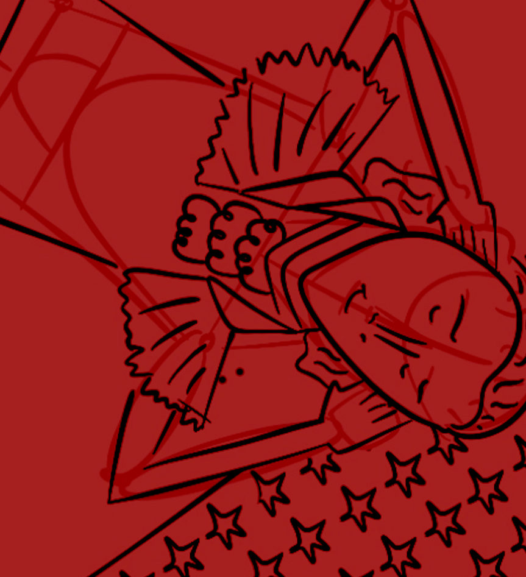
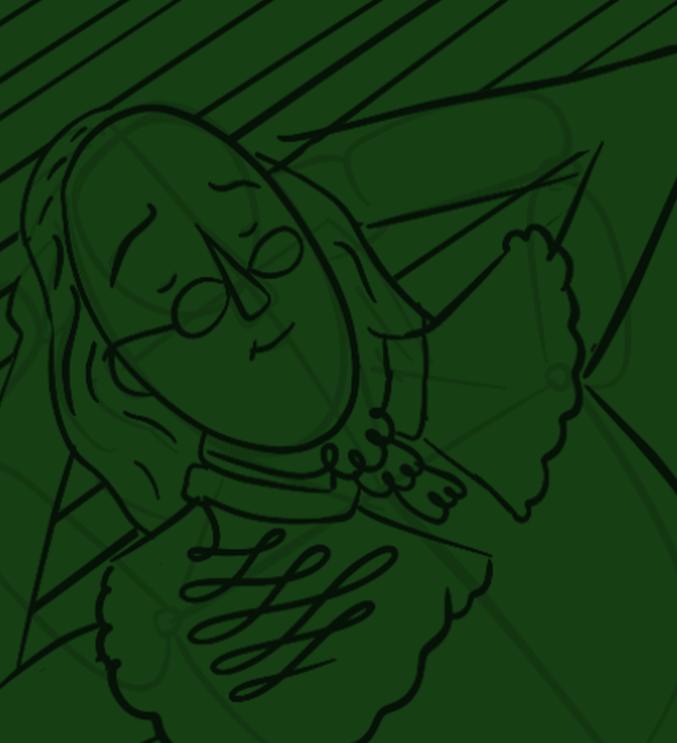
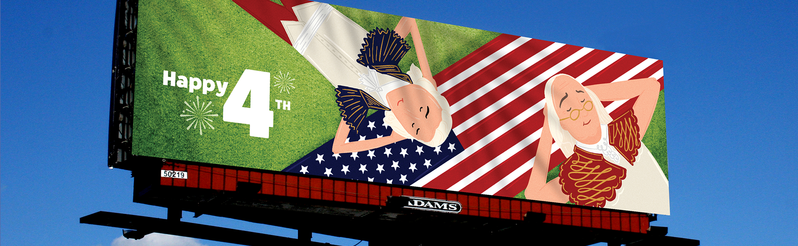
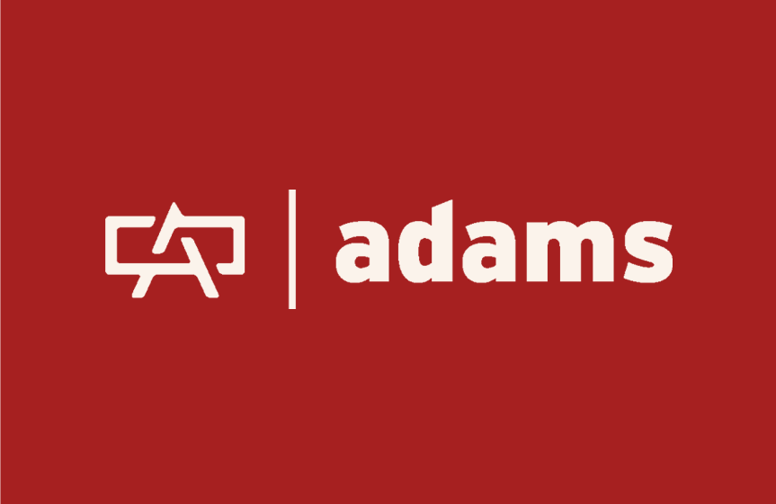
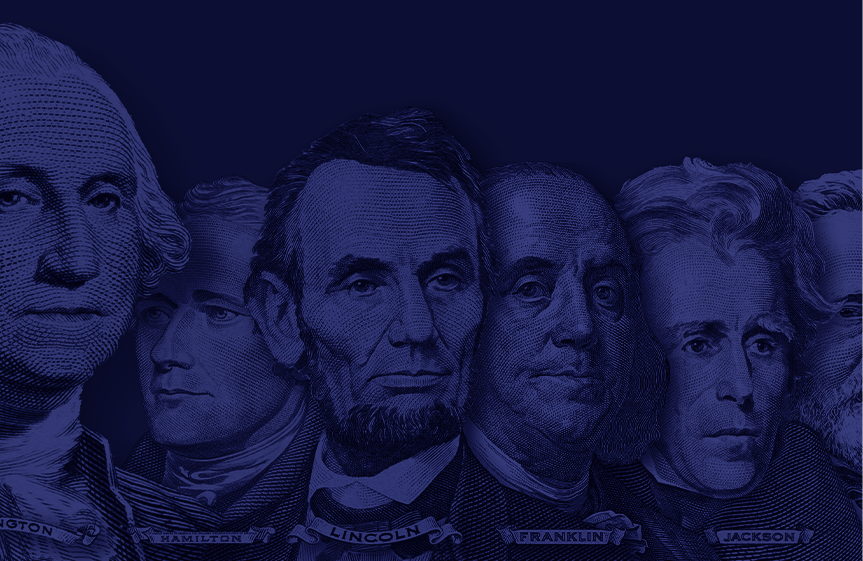

Patriotic Fun 🚲🧺🇺🇸
This project, completed for Adams Outdoor Advertising—one of the largest outdoor advertising companies in the U.S.—involved designing custom illustrations for a 4th of July billboard campaign. My task was to create engaging, memorable visuals that would capture the spirit of the holiday and resonate with a wide audience.

The Idea And The Process
- Blending History with a Modern Twist. My concept focused on capturing the spirit of the 4th of July by combining iconic historical figures (The Founding Fathers) with modern, playful elements. This approach aimed to create a fresh, engaging take on American history while resonating with a contemporary audience.
- The initial sketches served as a foundation to explore different ideas. Below are a few examples of how the concepts evolved from simple drawings into the finished campaign.


Concepts Created:
- Founding Fathers chilling under a tree, taking a well-deserved break while reflecting on their monumental achievements.
- A modern take, with the Founding Fathers riding bikes, adding a playful and contemporary element.
- An imaginative and surreal concept where the Founding Fathers are riding fireworks, adding an adventurous and fun vibe.

Project Overview
- Time Taken: 2 Weeks.
- Tools Used: Photoshop, Fresco, InDesign, Procreate.
- Concept: The goal was to encapsulate the 4th of July as a celebration of achievement and freedom. By illustrating the Founding Fathers in moments of relaxation—whether lounging under a tree, riding bikes, or even having fun by riding fireworks—I aimed to combine historical figures with a playful, contemporary twist. This concept was crafted to evoke a sense of pride and leisure, allowing the audience to connect with the holiday in a refreshing, relatable way.

